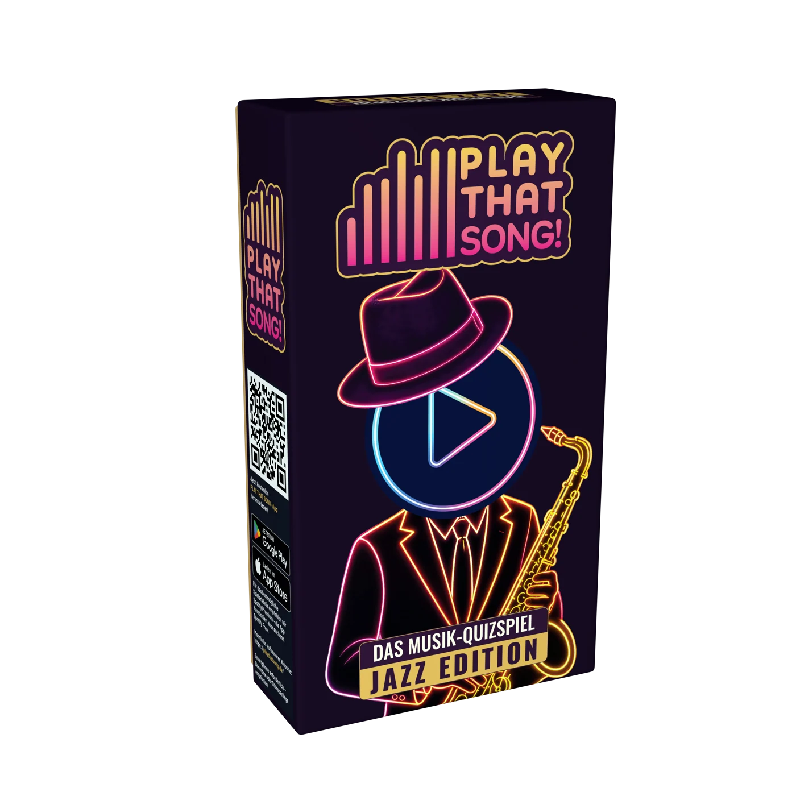
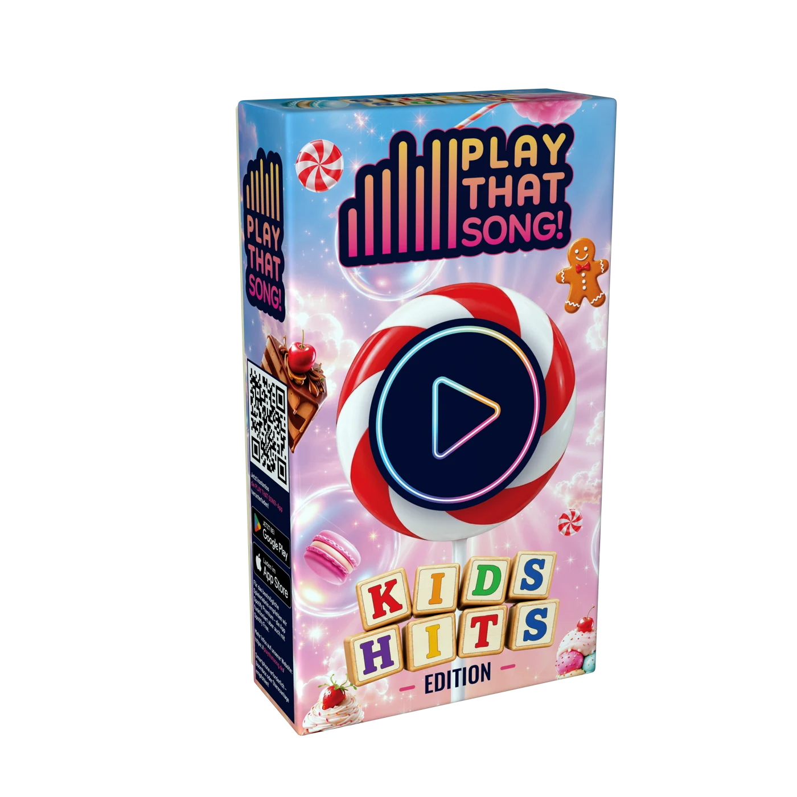
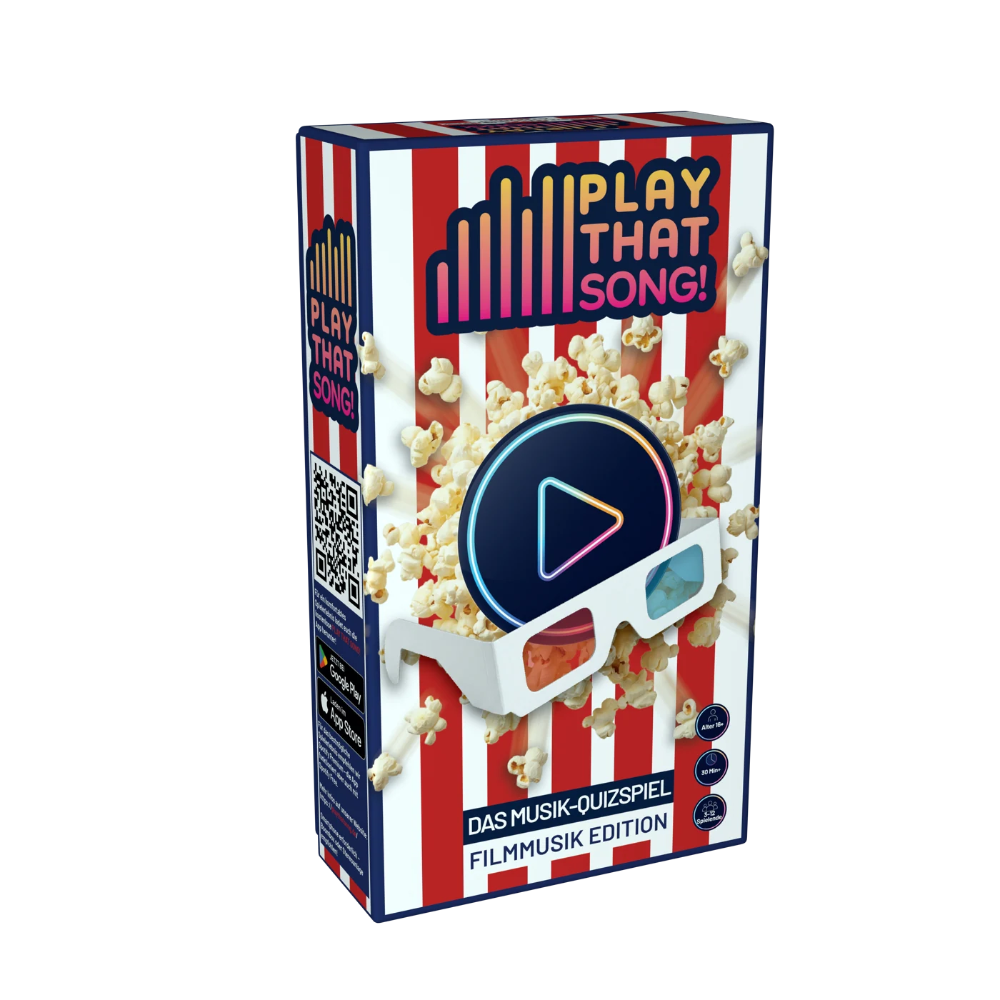

Die Aufgabe verstehen
Produkt, Zielgruppe und Rahmenbedingungen kennenlernen. Varianten entwickeln und die Richtung mit dem Team abstimmen.
✳ GRAFIK / MULTIMEDIA / WERKZEUGE
Ich gestalte Verpackungen, Bilder und Videos.
Und entwickle Werkzeuge, mit denen aus
Ideen fertige Produkte werden.



Vom Entwurf zum Produkt.01 / AUSGEWÄHLTE ARBEITEN
Reale Projekte. Von der Aufgabe bis zum Ergebnis.Bei PLAY THAT SONG begleite ich das Produkt von der Verpackung und Fotografie bis zum Onlineshop und Messeauftritt. Aufgaben und Entwürfe stimmen wir im Team ab; die gestalterische und technische Umsetzung liegt bei mir.
Eine gemeinsame Marke verbindet diese Projekte. Jede Arbeit zeigt eine eigene Aufgabe und meinen konkreten Beitrag.
02 / SELBST AUSPROBIEREN
Direkt im BrowserÄndern Sie den Kartentext, drehen Sie eine Verpackung oder gestalten Sie eine Animation. So wird sichtbar, wie die Arbeit hinter dem fertigen Bild funktioniert.
Kartengenerator und Animation sind eigenständige Browser-Demos meiner Arbeitsmethoden. Die 3D-Modelle stammen aus meinen bestehenden Blender-Projekten.
03 / MEINE ARBEITSWEISE
Ich bin Yevhenii, Grafik- und Multimediadesigner aus Halstenbek bei Hamburg. Seit 2010 arbeite ich projektbezogen mit Fotografie und Video. Diese Erfahrung brachte ich in meine Arbeit für PLAY THAT SONG ein.
Kontakt aufnehmen ↗Produkt, Zielgruppe und Rahmenbedingungen kennenlernen. Varianten entwickeln und die Richtung mit dem Team abstimmen.
Gestaltung ausarbeiten, Fotos aufnehmen und Dateien für Druck und digitale Medien vorbereiten. Das Ergebnis im jeweiligen Format prüfen.
Für wiederkehrende Aufgaben Vorlagen oder Werkzeuge entwickeln. So sind der Kartengenerator, FrameText Studio und weitere Arbeitsanwendungen entstanden.
Meine selbst finanzierte Weiterbildung in der Softwareentwicklung begann Anfang 2024 in Kyjiw. Nach einer Unterbrechung für den Umzug setzte ich sie abends neben der Arbeit fort und schloss sie ab; auch mein Online-Praktikum absolvierte ich abends. Neue technische Lösungswege erschließe ich mir eigenständig mit Dokumentation, Online-Ressourcen und KI-Werkzeugen wie ChatGPT und prüfe sie an konkreten Aufgaben.
Bei PLAY THAT SONG habe ich meine Erfahrung mit unterschiedlichen Medienformaten, der Abstimmung im Team und der Umsetzung unter Zeitdruck erweitert. Dabei entwickle ich auch meine Deutschkenntnisse im Arbeitsalltag weiter.
Bei ausgewählten Projekten nutze ich KI für die Bildgestaltung und Werkzeugentwicklung. Aufgabenstellung, Auswahl, Zusammenführung und Prüfung der Ergebnisse gehören zu meiner Arbeit. Das ursprüngliche Design der rosa Standard-DE-Box stammt von einem anderen Urheber. Mein Beitrag zur Neuauflage: Bearbeitung der Gestaltung und Ersatz der Rückseite.
Dieses Portfolio dient ausschließlich meiner Bewerbung und der Veranschaulichung meiner beruflichen Fähigkeiten. Die Arbeiten für PLAY THAT SONG entstanden im Rahmen meiner Tätigkeit bei MPH Medienpark Hamburg. Die Projektbeschreibungen erläutern meinen persönlichen Beitrag und meine Arbeitsweise innerhalb der Teamprojekte. Die Rechte an den gezeigten Unternehmensmaterialien, Marken und Inhalten verbleiben bei MPH Medienpark Hamburg bzw. den jeweiligen Rechteinhabern. Die Präsentation begründet keinen Anspruch auf diese Rechte und erteilt keine Lizenz zur Weiterverwendung der gezeigten Materialien.
04 / LEBENSLAUF
Berufserfahrung, Weiterbildung, Kenntnisse und Kontaktdaten kompakt als PDF. Wählen Sie die gewünschte Sprache.
Die PDF-Dateien können im Browser geöffnet und dort gespeichert oder ausgedruckt werden.